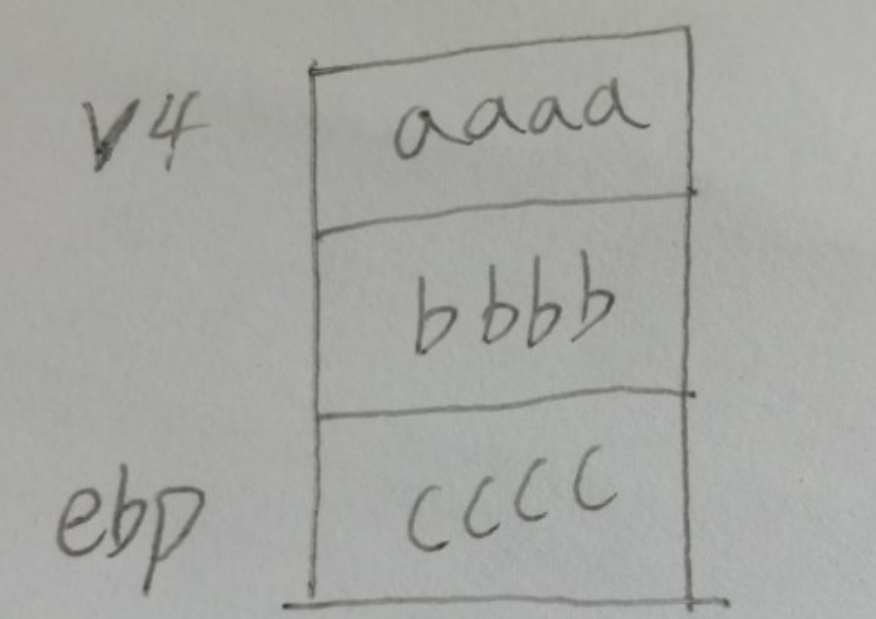
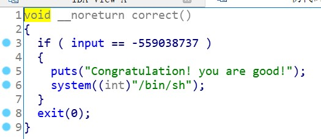
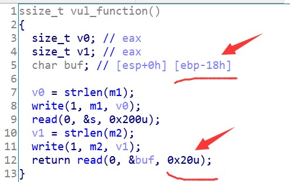
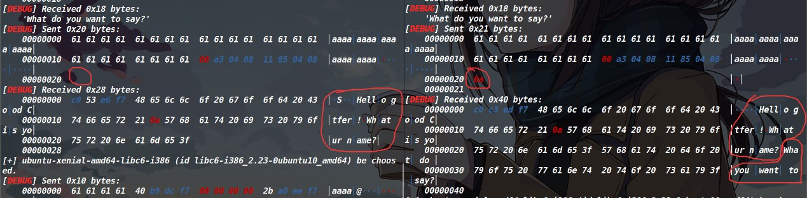

关于栈迁移的学习总结
1、什么是栈迁移
这里我谈谈自己的理解，简单一句话：栈迁移就是换个地方控制程序的执行流（这个换的地方既可以是bss段也可以是栈里面）。
2、为什么要使用栈迁移&&什么时候该使栈迁移（使用栈迁移的条件）
言简意赅的来说，就是可溢出的长度不够用，也就是说我们要么是没办法溢出到返回地址只能溢出覆盖ebp，要么是刚好溢出覆盖了返回地址但是受payload长度限制，没办法把参数给写到返回地址后面。总之呢，就是能够溢出的长度不够，没办法GetShell，所以我们才需要换一个地方GetShell。
使用栈迁移的条件：
1、要能够栈溢出，这点尤其重要，最起码也要溢出覆盖个ebp
2、需要有个可写的地方（就是你要GetShell的地方），先考虑bss段，最后再考虑写到栈中
3、学习栈迁移需要自身掌握什么知识
①需要掌握汇编基础
②较为熟悉栈结构
③以及明白函数调用与结束时栈的变化
PS：本文讨论的一切原理，都是针对于32位程序的栈迁移来说的，不过例题里面有一道是64位的栈迁移
4、栈迁移的原理
ebp和ebp的内容是两码事（它们二者的关系就如同c语言中,指针p与*p的关系）

ebp是0xffe7a9e8，它的内容是0xffe7aa38，而这个内容也是一个地址，这个地址里面装的又是0x8059b50。ebp本身大部分时候都是一个地址（程序正常运行情况下），而ebp的内容可以是地址，也可以不是地址（程序正常运行下，ebp的内容也装的是地址，但如果你进行溢出的话，自然可以不装成地址）。我这里想强调的是ebp和ebp的内容这两者一定不能混为一谈，在阅读下面的内容是，一定要注意区分两者。
栈迁移的核心，就在于两次的leave;ret指令上面
(在说明栈迁移原理之前，我先介绍一下leave和ret具体是在干什么，这里建议仔细看一下，不然后面连续两个leave;ret，容易搞迷了）。
leave指令即为mov esp ebp;pop ebp先将ebp赋给esp，此时esp与ebp位于了一个地址，你可以现在把它们指向的那个地址，即当成栈顶又可以当成是栈底。然后pop ebp，将栈顶的内容弹入ebp（此时栈顶的内容也就是ebp的内容，也就是说现在把ebp的内容赋给了ebp）。因为esp要时刻指向栈顶，既然栈顶的内容都弹走了，那么esp自然要往下挪一个内存单元。具体实现请见下图。ps:下面几张图片，当时制作的时候，有点粗心，把leave写成level了，因此读的时候注意下这里就好了。

ret指令为pop eip，这个指令就是把栈顶的内容弹进了eip（就是下一条指令执行的地址）具体实现请见下图。

栈迁移原理：
（先讨论main函数里的栈迁移）首先利用溢出把ebp的内容给修改掉（修改成我们要迁移的那个地址），并且把返回地址填充成leave;ret指令的地址（因为我们需要两次leave;ret）（如果不会找指令地址的话，本文最后的附录中，有介绍）此时main函数准备结束。
开始执行第一个leave，此时mov esp ebp让两个指针处于同一位置，现在还是正常运行，接着执行pop ebp就出现了异常，因为此时ebp的内容被修改成了要迁移的地址，因此执行了pop ebp，ebp并没有弹到它本应该去的地方（正常情况下，ebp里装的内容，就是它接下来执行pop ebp要去的地方），而是弹到了我们修改的那个迁移后的地址，接着执行了pop eip，eip里放的又是leave的地址（因为此时是把返回地址弹给eip，这个返回地址，我们先给覆盖成leave;ret的地址。你可能会问，如果这个返回地址不放成leave；ret的地址，行不行？很明显是不行的，因为我们想要实现栈迁移，就必须执行两个leave；ret，main函数正常结束，只有一个level;ret，因此我们在这里必须要它的返回地址写成leave;ret地址，以来进行第二次leave;ret），结果又执行了leave（现在执行第二个leave)，此时才是到了栈迁移的核心部分，mov esp ebp，ebp赋给了esp，此时esp挪到了ebp的位置，可你别忘了，现在的ebp已经被修改到了我们迁移后的地址，因此现在esp也到了迁移后的地址，接着pop ebp，把这个栈顶的内容弹给ebp，esp指向了下一个内存单元，此时我们只需要将这个内存单元放入system函数的地址，最后执行了pop eip，此时system函数进入了eip中，我们就可以成功GetShell了。结合描述过程与下图分析，效果更佳！（下图栈中填充的aaaa以及system_addr和/bin/sh等等，都是payload一起发送过去的，最后的两个aaaa仅仅是起到了一个填充的效果）当然，具体的payload都是根据题目来分析的，这里我只是举个例子。


最后来总结一下原理，核心是利用两次的leave;ret，第一次leave ret;将ebp给放入我们指定的位置（这个位置的就是迁移后的所在位置），第二次将esp也迁移到这个位置，并且pop ebp之后，esp也指向了下一个内存单元（此时这里放的就是system函数的plt地址），最终成功GetShell。
原理如上，遇见不同栈迁移的题目也是根本核心万变不离其宗。
5、栈迁移的实战运用
接下来是有四道栈迁移的题目来练习。分别是
攻防世界上的greeting-150
BUUCTF上的[Black Watch 入群题]
BUUCTF上的ciscn_2019_es_2
BUUCTF上的gyctf_2020_borrowstack
它们考察了在迁移到栈，迁移到bss段，从main函数结束时迁移，从main函数调用的函数结束时迁移，和64位的栈迁移以及ret2csu。在这里，我分别也给出他们的wp。
BUUCTF上的ciscn_2019_es_2


这里我们发现了溢出点。Read读入到s的这个地方，距离ebp只有0x28个字节，可是两个read都可以写入0x30个字节的内容，也就是说可以溢出覆盖ebp和返回地址。

我们还发现了后门函数，但是没有参数。

那现在大概思路就是，我们要用第一个read来泄露下ebp的地址***（因为是printf来打印字符串，参数是%s，因此是遇见00才停止打印，只要我们第一次read正好输入0x30个字符，那就没有地方在填上00了（read读入之后，会自动补充00），因此就可以把下面的ebp地址给打印出来了***），然后第二个read用来填充我们构造的system函数以及参数（我们这次是转移到了栈中，也就是第一次read读入s的地方），参数分布参考上图
为什么要拿到ebp地址呢，看上图的/bin/sh地址，我们怎么知道它的地址是什么呢，我们不知道，但是我们知道它距离ebp的偏移（通过IDA的栈图可以数出来），因此我们需要获得ebp的值，配合偏移来表达出这个地址，***这里要尤其注意这个ebp是main函数的，因为printf是打印内存单元里的内容，ebp确实是指向了vul的栈底，但是ebp里面装的内容可是main函数的栈底，因此这个ebp是main函数的栈底***。至于这个0x28怎么来的呢？
这里要用gdb调试一下，断点下到哪无所谓，主要就是要看vul函数快结束的时候，看下栈图。

当然，你实际做题的时候，肯定是看不见/bin/sh装到哪了，不过没事，在IDA里面我们分析一下，然后看一下它装在哪了，还是这个图，发现/bin/sh装在了距离栈顶是有四个内存单元的距离，然后再到gdb上去数一下，也就是我们的字符串会存到0xffd9d730这个位置，然后用0xffded758减去这个0xffd9d730，就能得到这个偏移0x28了。
最后的exp如下：
|
攻防世界上的greeting-150

这里表面上是看开了canary，但是在主要的函数中，没有发现canary的影子，因此，这个canary保护，在这里是有点迷惑性的，我们可以去溢出。

在上图中标注了，base64decode，是将解码后的内容放在了v4里面，而不是v6里面，v6里放的是解码后的字符串长度。
我之前看师傅们的wp一直纳闷，这输入的内容也没有被编码过，咋就到这里可直接就解码了，最后看到了exp才明白，原来是我们发送payload时候，我们自己去编码…，配合这个信息，我也就明白了，原来v6>0xc的这个限制，是说我们payload只能发送12个字节。
执行了这句之后，我们的input里面放的也是解码之后的内容了（因为我们是要把payload编码之后发送，因此这里的input实际上就是我们的payload)
现在input里面就是payload，这个payload只能发送12个字节
ok，我们继续去看auth这个函数。

找到了溢出点，在这里。[ebp-8h]的意思是说，这个v4距离ebp有八个字节的距离，可是input里面可以装12个字节，现在memcpy就可以把input的内容复制给了v4（这个v4和main函数里的v4不是一码事） 只能装8个字节，但是复制了12个字节过去，有什么好说的，溢出就完事了。但是只能溢出覆盖ebp，之前栈迁移的时候，我们为了凑齐两次leave;ret都是将main函数的返回地址写成leave,ret的地址，但是这道题我们没法写到返回地址上，怎么办，我们没办法凑够两次leave;ret了么，不不不，别忘了我们现在可不在main函数还是在auth函数里面，当auth函数结束的时候也会执行一次leave;ret再加上main函数结束的一次leave;ret，因此我们也凑够了两次leave;ret。
我们需要换到哪个地方去执行后门函数呢？没错，就是刚才说的input

这里也可以看到input是处于bss段的。
现在我们来看这道题，我们可以往input里面输入12个字节，那假设我输入的是aaaabbbbcccc，（并且这个cccc是aaaabbbbcccc这个字符串的首地址）。
那么现在栈里就是这么个情况

当执行到leave的时候，mov esp ebp，此时的esp是cccc了，然后ebp原本该回到正常的main函数的栈底，可是现在它来到了cccc的这个地址（因为执行了auth函数中的leave ret，这里才是核心点）（并且要注意的是ebp内容和ebp是两个东西，ebp的内容装什么都可以，但是ebp本身只能去指向地址）（即此时是ebp指向了aaaa的地址，上面说了cccc的地址是指向的aaaa所处位置）。
现在程序继续运行，因为函数的返回地址是正常的，所以它还是回到了main函数里，它又开始往下运行，直到main函数结束了，它开始执行leave，那么此时我们又一次mov esp ebp；esp成了aaaa的地址，这个时候又进行了pop ebp，那么esp成了bbbb，最后到ret的时候，pop eip，此时就会把栈顶的bbbb，弹入eip去执行了。
如果感觉我说的太抽象了，没有图片的话，可以参考这个师傅的文章(24条消息) format2(xctf)_whiteh4nd的博客-CSDN博客，他这里面最后画的三张图片，描述的很清楚，我上面的叙述过程，跟他图片表达的是一个意思。
最后，我们拐过来看一下，eip执行了bbbb，那我们把bbbb换成后门函数的地址不就ok了，然后是cccc的这个地址，不就是我们这道题的input地址么，input本身能装12个字节，把它本身的地址写到cccc，就是12个字节的最后4字节，这样不就把栈迁移到input的内容里了么（但事实上栈没有过去，毕竟这里可是bss段）
Exp编写很简单
import base64 |
至此本题也就结束了。
但通过这道题，我学到了不少的东西。
尤其是这个函数
这里我一直是在想怎么把input写成这个-559038737，而忘记了其实不必循规蹈矩，因为没开pie，我们完全可以把这个system函数的地址去弄到eip里面使其执行。也认识到了找漏洞点的重要性，上来就去仔细分析函数的功能用处不大，大致扫过即可，先去找明显的漏洞点，在围绕这个漏洞点想一下，我们能利用它做些什么。
BUUCTF上的[Black Watch 入群题]
打开IDA发现，主程序中，buf距离栈底有0x18个字节，但是最后的一个read却可以读入0x20个字节，很明显这里存在溢出，但是吧，这个溢出的长度也是很尴尬的，我们确实可以填入system函数地址，但是这样就没办法传参数了，而且我们发现程序里也没有system函数，因此肯定还是要泄露函数地址，用libc里面的system获取shell。
我们发现这里的溢出刚好可以覆盖ebp和返回地址，很明显这里要用栈迁移。然后我们再看下第一个read把输入的内容储存到哪了
发现是存到了bss段。
那我们的思路大概就出来的，首先把在第一次输入中read去把write_plt的地址和它的参数存进去，因为我们想要system函数地址肯定是需要先泄露libc基地址的。然后第二次输入去把ebp给改成bss段的地址，然后把返回地址改成leave,ret地址（具体原因参考栈迁移原理）
然后程序从main函数返回的时候，被劫持到了bss段，去执行了write函数，泄露出来write函数的got地址，并且把它的返回地址填写成main函数，因为我们需要再让程序跑一次，毕竟我们最终可是要去执行system函数的，现在只是把libc基地址给泄露出来了而已。
现在执行完了write函数，然后返回到main函数重新获得了两次输入的机会，那么我们依然如法炮制，在第一次输入中存入system函数地址和它的参数，此时各单位以就位，就差了修改ebp了，然后来到了第二次输入，我们先填充垃圾数据，直到填充至ebp，然后把ebp的地址写成bss段的地址，还要把返回地址写成leave;ret的地址。
最后main函数返回的时候就进行了栈迁移，来到了我们步骤的bss段，然后执行system函数，成功GetShell。
以上只是介绍了本题的思路，但是没有探究原理，具体原理参考前面的栈迁移原理部分。
本题的exp
|
这里有一个很重要的点，一定要注意，就是这里第二次输入的时候，必须要用send去发送，不能用sendline发送
下图的左侧是使用send发送了0x20个数据，右侧使用的是sendline发送了0x20个数据，可以发现，右侧最后发送是多了一个回车，此时程序本来是正常要发送一句hello good ctfer!what is you name?然后会等待用户发送一个内容，然后显示what you want to，左侧的确是这样，但右侧直接what is you name?之后把what you want to给打印出来了，也就根本没有让用户输入内容，为什么？因为sendline多出来的回车，存放到了缓冲区里面，下次输入的时候，程序直接就把缓冲区里的内容读进去了，发现是个回车，程序认为你的输入已经结束了，因此就打印了what you want to，事实上你根本就还没输入。
由此可见，在任何时候发送数据，选择sendline时，都需谨慎。

BUUCTF上的gyctf_2020_borrowstack
这道题，不知道什么原因，用远程的exp是打不通本地的。因此这里我远程和本地的wp分别写了一份。二者的前面是一模一样的（但是后面的思路是不一样的），如果看过其中一份，那么另一份前面的内容跳过即可。
###打远程的WP


主程序很简单，也发现了溢出点在第一次输入上，read读入buf的时候，可以溢出16个字节，也就是溢出两个内存单元的内容。

可以发现，我们仅仅能控制rbp和返回地址。并且第二次输入的bank，输入到了bss段

那我们就可以考虑栈迁移，把需要构造的payload转移到bss段。同时也没有发现后门函数和/bin/sh参数。
我们先说一下正常的思路。之前讲过了栈迁移的原理，因此我们第一次的read肯定是前面填充垃圾数据，然后把rbp填充成我们要迁移的地址，然后返回地址写一个level;ret指令的地址。然后第二次输入到bss段去构造我们的payload。因为我们没有后门函数，那只能去泄露一个函数地址，然后去动态库里面找后门函数，接着把返回地址填写成main函数的地址，然后再来一次栈迁移，去构造获取shell的payload。
但是这道题有好几个地方需要去注意。首先是我们看一下写入bss段地址。


发现了got表离这个bss段地址是很近的，因为我们要把栈迁移到bss段，就是可以把这个bss段给看成栈了，我们会在这个“栈”里面调用puts函数去泄露函数地址，但是调用puts的时候会开辟新的栈帧从而改变地址较低处的内容（不仅仅是got表，还有FILE *stdout和FILE *stdin），导致程序崩溃。这里光说的话，比较抽象，我在这里详细讲一下。
因为这里的地址0x601060存放的是stdout指针，然后等到返回main函数之后又会执行setbuf(stdout, 0LL);可是因为这个0x601060距离我们迁移到的bss段这里太近了（我们迁移到的地址是0x601080），当执行put函数的时候执行了一次sub rsp 0x18,并且还执行了多次的push，此时的0x601060已经被覆盖成别的内容了具体情况参考下面的图【1】和图【2】

图【1】

图【2】
可以看见这两张图片，都因为调用了puts函数，从而影响了栈的变化，修改了stdout指针。等到返回main函数的时候，执行了setbuf(stdout, 0LL)，从而导致程序崩溃。
因此在这里我们的思路是利用ret指令，把构造的payload的存入稍微高点的地址空间，这样即使执行了puts函数开辟了栈帧，也依旧没有干扰到0x601060所存放的stdout指针。
继续说这个思路遇见的问题，因为要利用ret指令往下迁移来进行“栈”的布局，但是用多少个ret往下滑，这个只能去一次一次试。发现至少填充20个ret就可以把”栈”迁移到一个不会影响程序运行的地方。也就是说我们只要第二次先输入20个ret，然后正常的写一个pop_rdi的指令，然后是puts的got地址，接着就填写puts的plt地址，最后把返回地址填写成main函数。这样就泄露出来了libc_base，然后找到libc版本（打本地和远程找libc版本是方法是不一样的）我这里说下远程的libc版本怎么找，看网上师傅们说是泄露函数地址的后三位，然后上网站上搜索libc版本，可是我试了下不行（不知道是哪出了问题），然后有位师傅告诉我他是这么找的。

发现这是ubuntu16，然后去BUUCTF上找资源（因为我这个是在BUUCTF上做的），发现资源如下

然后点一下这个64bit的这个libc，下载即可。
最后用one_gadget来搜索这个libc的库，去找到获取shell的语句地址。

这个constraints下面的就是这个execve执行的条件(至于哪个地址能满足这个条件，一个一个试试就行），然后上面就是对应的地址，最后我们要用这个地址去加上libc_base，得到真正的one_gadget地址。接着返回到main函数再来一遍，这回第一次输入的时候，我们直接把这个one_gadget给放入返回地址即可。最后要注意的就是因为返回到main函数之后，是有两个read的，尽管我们在第一个read就覆盖了返回地址，但是还是要把第二个read给发送一个内容，才可以结束main函数，因此我在最后一个read发送了一个’1’。
这个思路其实还有一种变形，就是在第一次read的时候，把rbp直接填充成我们要迁移之后的地址（这个地址是要保证执行puts函数也不会干扰到程序的正常数据），然后第二次输入只需要把迁移后的地址之前全部填充成垃圾数据，然后构造payload，等到迁移之后，直接迁移到了构造的payload的这里，效果和变形之前的思路是一样的）
from pwn import * |
###打本地的wp
主程序很简单，也发现了溢出点在第一次输入上，read读入buf的时候，可以溢出16个字节，也就是溢出两个内存单元的内容。
可以发现，我们仅仅能控制rbp和返回地址。并且第二次输入的bank，输入到了bss段
那我们就可以考虑栈迁移，把需要构造的payload转移到bss段。同时也没有发现后门函数和/bin/sh参数。
我们先说一下正常的思路。之前讲过了栈迁移的原理，因此我们第一次的read肯定是前面填充垃圾数据，然后把rbp填充成我们要迁移的地址，然后返回地址写一个level;ret指令的地址。然后第二次输入到bss段去构造我们的payload。因为我们没有后门函数，那只能去泄露一个函数地址，然后去动态库里面找后门函数，接着把返回地址填写成main函数的地址，然后再来一次栈迁移，去构造获取shell的payload。
但是这道题有好几个地方需要去注意。首先是我们看一下写入bss段地址。
发现了got表离这个bss段地址是很近的，因为我们要把栈迁移到bss段，就是可以把这个bss段给看成栈了，我们会在这个“栈”里面调用puts函数去泄露函数地址，但是调用puts的时候会开辟新的栈帧从而改变地址较低处的内容，导致程序崩溃。
因此在这里我们不去返回到main函数，直接返回到read函数，这样就不会执行setbuf。
首先的第一个问题就是栈迁移之后，去执行puts函数，puts函数开辟的栈帧会去影响前面的got表中的内容，因此修改rbp时，我们把迁移的地址写的高一点，这样跳转执行的时候，就不会干扰低地址的数据。
由于这是64位程序，我们要想执行read，需要去找gadget进行传参。可是搜索之后才发现我们没有能控制rdx和rsi的指令，这也就是说我们如果想找gadget的话，执行read函数，连输入的地址都控制不了，因此这里采用ret2csu。

（关于这个ret2csu的细节，在另一篇博客上说明，这里只介绍大致思路），然后执行了read函数之后，直接把read返回地址填写one_gadget地址即可获取shell。在执行read之前先执行puts去泄露puts的got地址，然后把puts的返回地址进行ret2csu去执行read函数。执行完puts的时候要记得给接收了，然后我们要去拿到libc基址，只需要用puts的真实地址去减libc库中的puts地址即可。用ldd去看下程序所依赖的动态库。

获取了动态库的版本之后，就可以得到libc基址，然后再用one_gadget去搜索可以获取shell的one_gadget。

至于哪个能用，一个一个试一下就行了。最后用one_gadget加上libc基址就是能够获取shell的地址，我们把这个指令的地址放到read的返回地址即可获取shell。至于怎么知道read的返回地址，这里有点讲究。
因为我们这里直接call read的got地址了，因此执行call的时候，会把下一条指令去当做返回地址，也就是0x4006ed
（用ida也可以看出来） 又因为返回地址一定会被存到栈里面（这时候在执行read函数之前 用gdb看一下栈 看看哪个地址里面指向的是0x4006ed)
然后就去将read函数输入内容的地址 设置成那个栈的地址即可
#coding:utf-8 |
6、附录
找leave;ret指令地址，只要在IDA里的代码段随便找到有leave ret出现的地方，取leave的地址即可